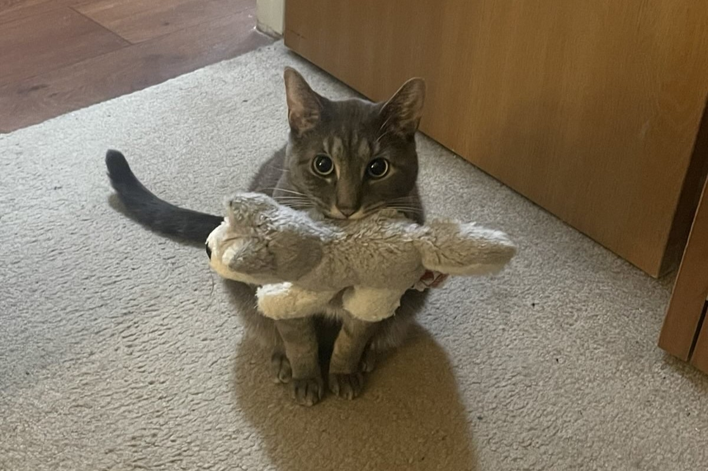
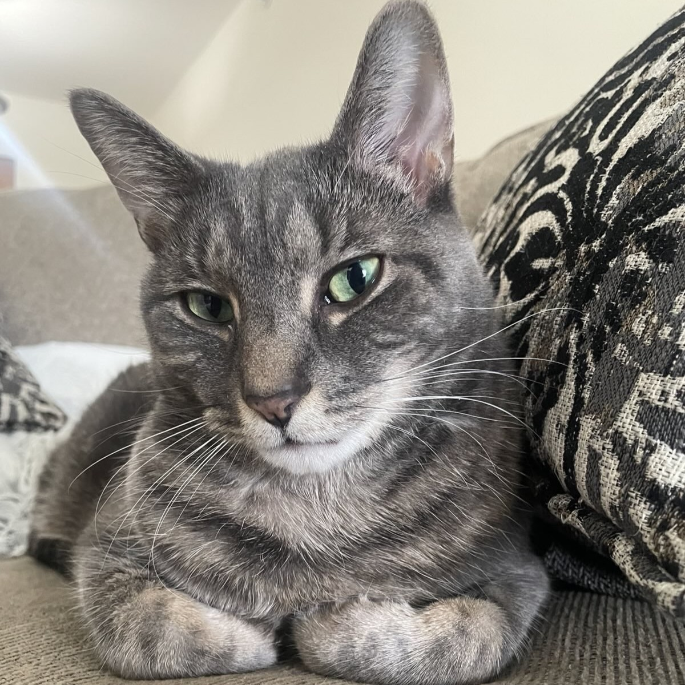
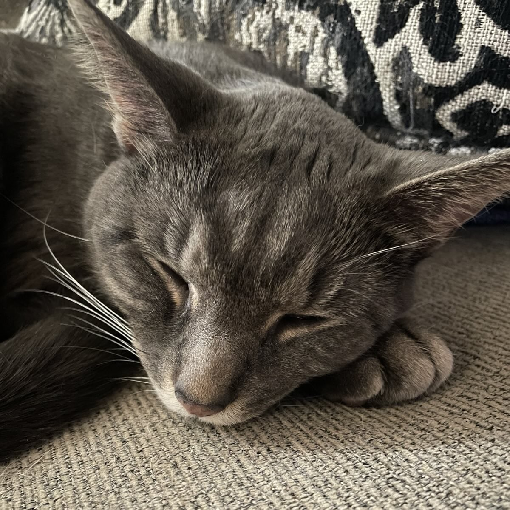
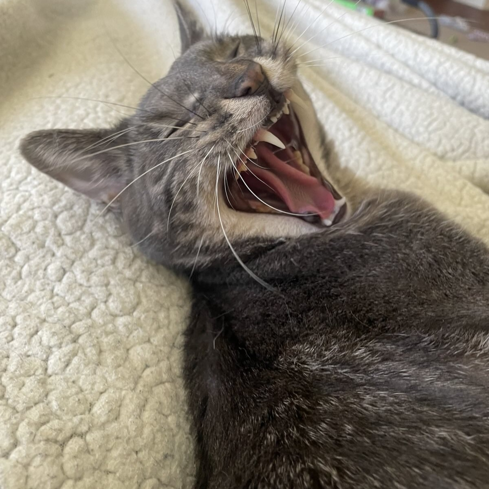
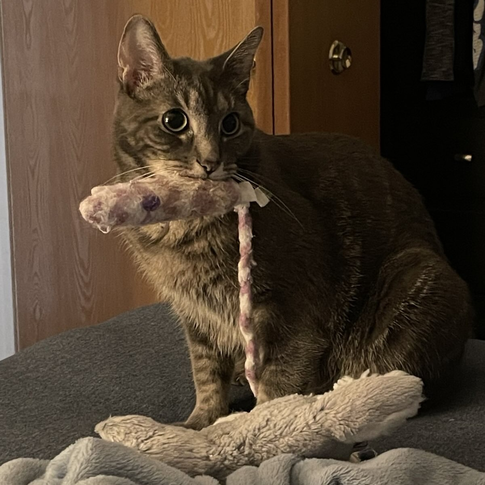

This fanpage is dedicated to the cat Finn. Everything you need to know about this rambunctious little hellion can be found here.

Finn has many faces...

Sometimes he just needs to lie down. Being a cat is tiring!

He sleeps for about 20 hours of the day. He needs all his energy for 2AM romps around the house!

Stretching those jaw muscles. He acts like he's starving but he eats like a king.

His second favorite toy. He likes to just suck on this bad boy in between mouthfuls of food.
Finny's a very good boy sometimes. His favorite toy is his stuffed wolf that he stomps with. He's a VERY messy eater but it's okay 'cause he's cute. He's shy but he has his favorite people.
- Finn's Mom
Sign up for our newsletter to keep up with Finn!
Learn more about Finn from our monthly updates by clicking that button right over there!